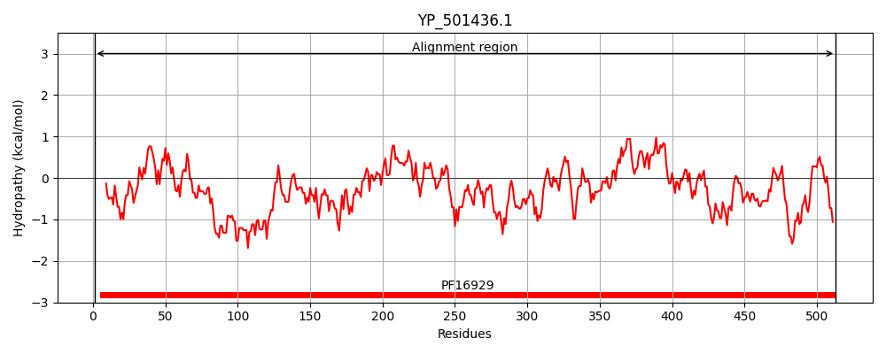
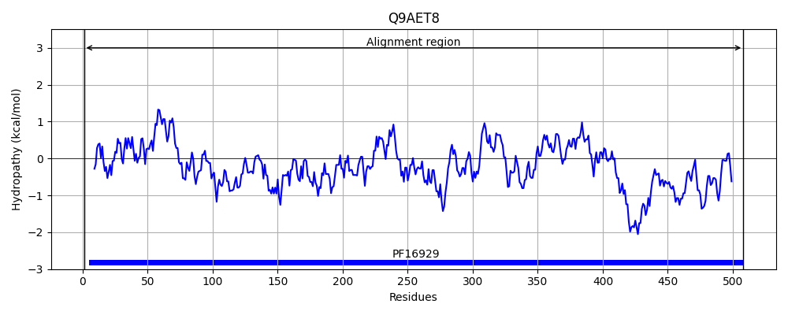
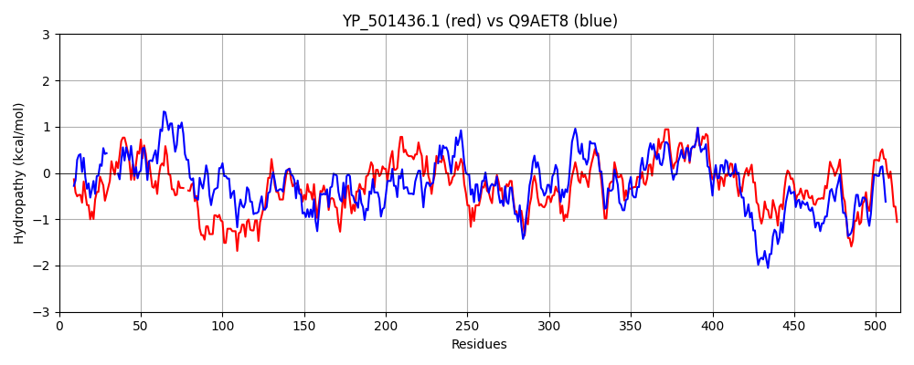

Hit Accession: Q9AET8
Hit TCID: 3.A.5.10.1
Hit Description: gnl|BL_ORD_ID|17726 gnl|TC-DB|Q9AET8|3.A.5.10.1 Accessory secretory protein Asp2 - Streptococcus gordonii.
Mach Len: 515
e:0.000000
Query TMS Count : 0
Hit TMS Count: 0
TMS-Overlap Score: 0.000000
Predicted Substrates:None
BLAST Alignment:
Score: 1007 , Bit scores: 392 bits, E-value: 7.7e-132, Alignment length: 515, Percentage identity: 39
Query: 1 MPRKFRVLQIGGDDLEPIFQHKKGVSWDYFDIGLFEFDSGYVEAIEAIVEAEGRFDFIYIQAPYSETLTNLLQMISE--PYNTYVDESFWSVEYEQDENVQKYVVQPLHYRNIEERNNKLEAVSFSGQYGDKVSPKLALVHPNFKGDVVYQGNSELTLSGEFGKEFKPIASWQNNLVYDKDKVIQIWPEFDIDGAVELQYTFRLIQTGADGALIEQIVLTDDMLDSPLEIPAKPFDAYISVTVKARGNGTVHLGPIHKRWSRLDMGQFLLGGSRFVDSQRQEFIYYFHPGDMKPPLNVYFSGYRTAEGFEGYYMMKRMNAPFLLIGDPRVEGGSFYIGSSEYEQGIINVIDETLEKLNFKSHELILSGLSMGSFGALYYGAQLNPQAIIVGKPLVNIGTIAEHMRLLRPEEFGTALDVLVSNEGDTSQASIQALNQKFWQTFQKKSLSQTVFAIAYMQHDDYDPHAFQELLPVLTAHQARVMNRSIPGRHNDDSPTIASWFVNFYNIILEDKFGR 513
M K ++LQIG D + W YF F AI+ ++E E F I + + +L + S PY + + +++ +++Y Q + + KL F GQYGDK++P +V P FKG + + G L L G FG +F+PI SW+ N+V K ++IW E++ D + EL+ IQ G+ L+ + V ++ ++ + + F +++ +T++ARG GT+ +G H+R +R G+F+LGG DS RQE Y+F+PGD KPPL VYFSGYR AEGFEG+ MM+ + PFLLI D R++GG FY+GS E E+GI +I E +E L F ELILSG+SMG++GA YYGA +P+AII+ KPL N+GTIA+ RL PE F ALD+L + G + ++ L+ ++W+ F+K S+T+F +AYM+ +DYDP A+++L+ L + ++M+ + GRHNDDS + +WF+N++ IILE +FGR
Sbjct: 1 MKNKLKILQIGSIDWSKEVVIPDNMDWYYF------FSLTLRLAIKKVMEMEKINHFSAIIVDDLDLIPDLFLIESRIIPYTIFYSKKQQAIQEPIAFFLKRYCAQQIDLSDRPNLLRKLSKALFRGQYGDKMTPLDMVVSPGFKGRICHNGYENLELEGNFGSDFRPIVSWKYNIVASKKNPVEIWLEYEKDLSCELRLRIYNIQEGSAADLVRESVFSETDMEETIVLD-NDFTSFLGITLEARGFGTLKIGAFHQRLTRYQFGKFVLGGKILKDSHRQEINYFFYPGDFKPPLVVYFSGYRRAEGFEGFGMMRGLGCPFLLISDQRLDGGVFYLGSDELEEGIRRIIQEHMELLGFSERELILSGISMGTYGAAYYGADFSPRAIILCKPLANLGTIAQRGRLRLPEVFPMALDILHRHTGGKDRENVMELDNRYWKKFKKADFSRTIFGLAYMKEEDYDPTAYEDLVQYLYPTETQLMSNGLSGRHNDDSTMVINWFMNYHRIILEKEFGR 508 | Protein Hydropathy Plots: |
|---|
|  |  |
Pairwise Alignment-Hydropathy Plot:
|
|---|
|  |